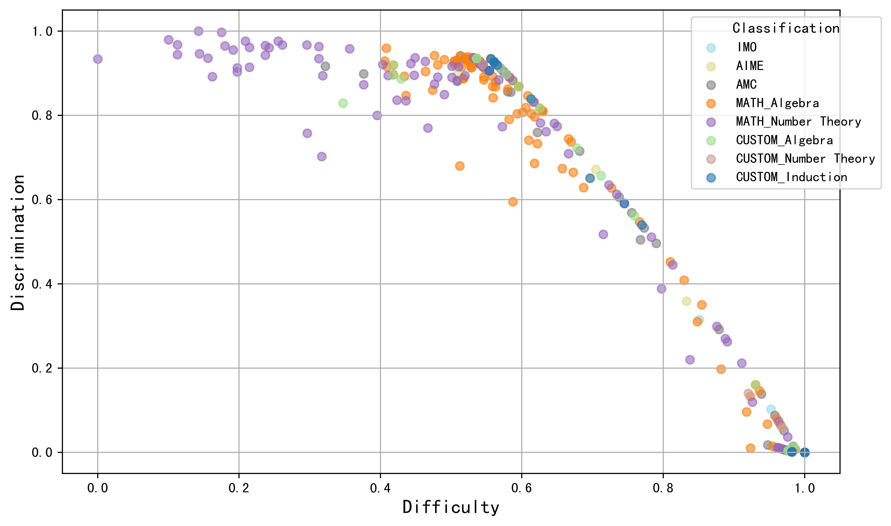

Builds miniF2F-Graded by annotating the Lean 4 version of miniF2F with per-theorem difficulty from LLM proof attempts checked in Lean 4.13.
Abstract
Large language models (LLMs) for formal theorem proving have become a prominent research focus. At present, the proving ability of these LLMs is mainly evaluated through proof pass rates on datasets such as miniF2F. However, this evaluation method overlooks the varying importance of theorems. As a result, it fails to highlight the real performance disparities between LLMs and leads to high evaluation costs. This study proposes a psychometric-based evaluation method for theorem proving with LLMs, comprising two main components: Dataset Annotation and Adaptive Evaluation. First, we propose a metric calculation method to annotate the dataset with difficulty and discrimination metrics. Specifically, we annotate each theorem in the miniF2F dataset and grade them into varying difficulty levels according to the performance of LLMs, resulting in an enhanced dataset: miniF2F-Graded. Experimental results show that the difficulty grading in miniF2F-Graded better reflects the theorem difficulty perceived by LLMs. Secondly, we design an adaptive evaluation method to dynamically select the most suitable theorems for testing based on the annotated metrics and the real-time performance of LLMs. We apply this method to evaluate 10 LLMs. The results show that our method finely highlights the performance disparities between LLMs. It also reduces evaluation costs by using only 23% of the theorems in the dataset.
Problem
LLM theorem provers are mainly evaluated by Pass@N on miniF2F. That metric weights all theorems equally, hides performance differences between models, and is computationally expensive.
Approach
Using psychometric ideas, four annotation LLMs generate whole proofs for the Lean version of miniF2F, and the proofs are verified with Lean 4.13. From the pass rates, each theorem receives difficulty and discrimination metrics and is graded into four levels, producing miniF2F-Graded. An adaptive evaluation procedure based on item response theory then selects the most informative theorems according to each model's real-time performance.
Figure 1: The method consists of two parts. In Part 1: Dataset Annotation, difficulty and discrimination metrics are assigned to each theorem in the miniF2F dataset based on the performance of LLMs, as determined by the Metric Calculation process, resulting in an annotated dataset, miniF2F-Graded. In Part 2: Adaptive Evaluation, the most suitable theorems are dynamically selected for testing based
Results
The new difficulty levels separate LLM pass rates monotonically, which the original human MATH-based grading does not. Adaptive evaluation of 10 LLMs distinguishes models more clearly and uses about 23% of the theorems, a 76% cost reduction.

Figure 2: The scatter plot of the dataset annotation results illustrates the relationship between theorem difficulty (x-axis) and discrimination (y-axis).